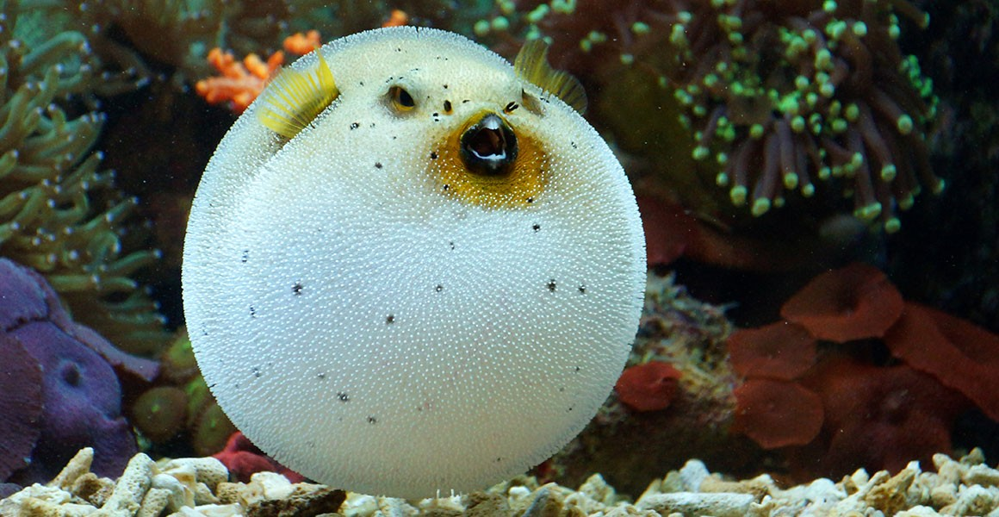

Szenvedélyem a fényképezés, mert szeretek pillanatokat megörökíteni és különleges nézőpontból bemutatni a világot. Szabadidőmben szívesen játszom, legyen szó társas- vagy videójátékokról, hiszen ezek kikapcsolnak és jó élményt adnak. A horgászat is közel áll hozzám, mert nyugalmat és türelmet ad, miközben a természetben lehetek. Emellett imádok kirándulni, új helyeket felfedezni és élvezni a friss levegőt. A motorsport pedig különleges helyet foglal el az életemben, hiszen rajongok a sebességért, az izgalmas versenyekért és a technikai kihívásokért. Minden héten járok Wing Tsun kungfu edzésre, ami sokat jelent nekem, és ezt mondanám a kedvenc "sportomnak". Emellett eljárok röplabdázni is amit szintén nagyon szeretek.
 Főoldal